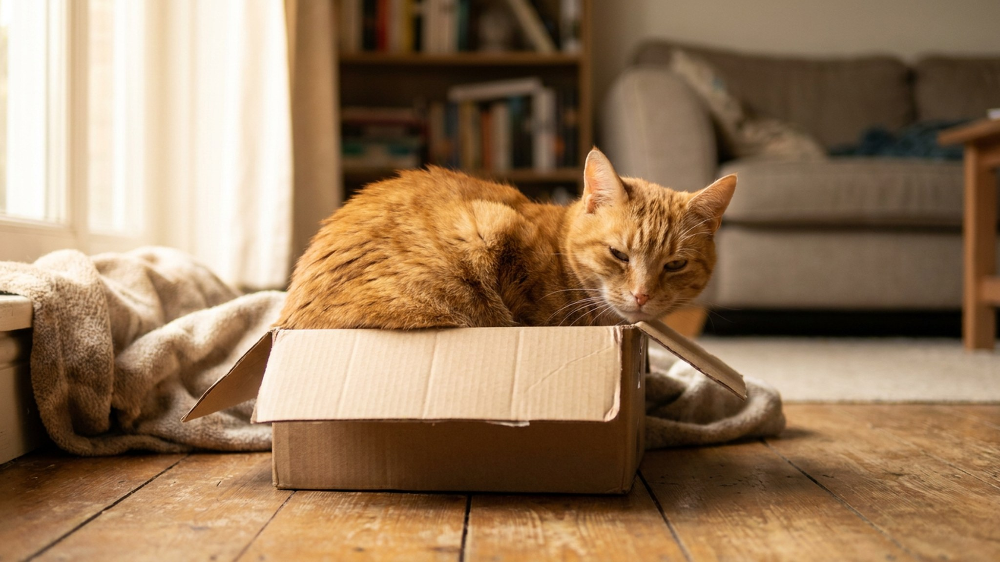

Вы кладёте лист A4 на пол — и через минуту кошка уже сидит на нём, аккуратно сложив лапы. Даже квадрат из скотча на полу работает точно так же. Это не случайность и не вредность: за феноменом «if I fits, I sits» стоят три разных механизма, и один из них — иллюзия Канижи, тот же нейронный трюк, что работает у людей.
🐾 Спросите AI-ветеринара прямо сейчас
AnimaLife — приложение, где AI-ветеринар отвечает на вопросы о кошке или собаке 24/7. Бесплатно, без записи и очередей.
Интернет-мем «if I fits, I sits» появился в середине 2000-х и закрепился за кошками, которые залезают в явно тесные коробки, миски и ящики. Но исследователи поведения быстро заметили: кошки сидят не только в ёмкостях. Они садятся и на плоские контуры — коврики, листы бумаги, журналы. Даже нарисованный квадрат на полу привлекает кошку так же, как реальная коробка.
Это расширенное толкование феномена открыло три отдельных вопроса: почему коробки притягивают (физическое ограничение), почему плоские листы (зрительное ограничение) и почему вообще замкнутость так важна для кошки.
В 2021 году исследователи из City University of New York (Гейл Смит и коллеги) провели эксперимент: на полу размещались коробка без стенок (просто квадрат из скотча), иллюзорный квадрат Канижи (четыре «пакмана» по углам, создающих видимость квадрата) и контрольные фигуры без квадратного контура.
Результат: кошки садились внутрь иллюзорного квадрата Канижи с той же частотой, что и в настоящий квадрат. Фигуры без замкнутого контура привлекали их значительно реже. Это говорит о том, что кошачий мозг, как и человеческий, «дорисовывает» замкнутый контур там, где его нет — и реагирует на него как на реальное ограничение пространства.
Иллюзия Канижи — одна из классических зрительных иллюзий. Мозг видит белый треугольник поверх трёх кругов с вырезами, хотя никакого треугольника нет. Кошки, судя по эксперименту, подвержены похожему эффекту в отношении замкнутых форм на полу.
У кошек комфортная температура тела — 38,5–39,5°C, и они активно ищут тёплые поверхности. Бумага, ткань, коврик — все эти материалы обладают лучшей теплоизоляцией по сравнению с холодным полом (особенно плиткой или ламинатом). Сев на лист бумаги, кошка буквально создаёт себе маленький теплоизолирующий коврик.
Это особенно заметно зимой: кошки явно предпочитают бумагу и газеты холодному полу. Летом тот же лист всё равно привлекает — тогда работают другие механизмы, — но выбор в пользу тёплого основания становится менее обязательным.
Кошки — облигатные хищники, которые одновременно являются и потенциальной добычей для более крупных животных. Эволюционно им важно иметь «базу» — замкнутое место, из которого можно наблюдать за окружающим, но при этом чувствовать защиту с нескольких сторон.
Даже условный контур на полу активирует что-то похожее на этот древний инстинкт. Кошка, сидящая на листе бумаги, психологически «отмечает территорию» и создаёт себе мини-зону комфорта. Неслучайно они часто садятся именно в центр листа, а не на краю.
Этим же объясняется универсальное правило коробок: чем теснее коробка, тем комфортнее кошке. Физический контакт со стенками — ощущение защиты со всех сторон одновременно.
Отдельный и очень частый вариант: вы открыли книгу или ноутбук — и кошка тут же садится сверху. Здесь работает не только тяга к «занятой поверхности»:
Понимание механизма открывает практические применения:
Да, классический интернет-эксперимент «квадрат из скотча» работает на большинстве кошек. Создайте квадрат 40×40 см из малярного скотча прямо на полу — и понаблюдайте. Большинство кошек зайдут внутрь в течение нескольких минут. Это безопасное занятие и наглядная демонстрация иллюзии Канижи в реальном времени.
Важно: скотч не должен касаться шерсти кошки — используйте малярный, а не монтажный. И не делайте квадрат совсем маленьким: кошке нужно физически поместиться внутрь.
🐾 Дневник здоровья питомца — в кармане
Вес, прививки, симптомы и напоминания в одном приложении. AnimaLife следит за здоровьем питомца вместо вас.
🐾 Понравился разбор?
Подпишитесь на канал — каждый день разбираем по одному тревожному симптому у кошек и собак: что в пределах нормы, а когда пора к врачу. Подпишитесь, чтобы не пропустить разбор, который может спасти здоровье вашего питомца.